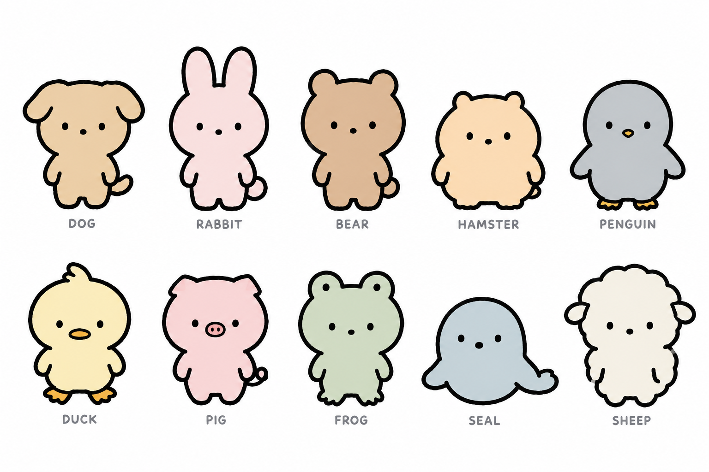

보리 문법 동물 10종
gpt-image-2.5-sunburst · medium · 1536×1024 · $0.033 · 참조: 보리 확정 시트 + 깜자 2장 · 프롬프트: animals-prompt.txt

- 개 · 토끼 · 곰 · 햄스터 · 펭귄 / 오리 · 돼지 · 개구리 · 물범 · 양. 각각 단색, 무늬 없음, 실루엣(귀·부리·주둥이·몸 형태)만으로 구분.
- 보리와 같은 얼굴 문법: 점 눈 벌어짐, 코 점(조류는 부리, 돼지는 주둥이), 입 없음, 블러셔 없음, 늘어진 팔.
- 조연 캐스팅이나 스핀오프 종 선택용.